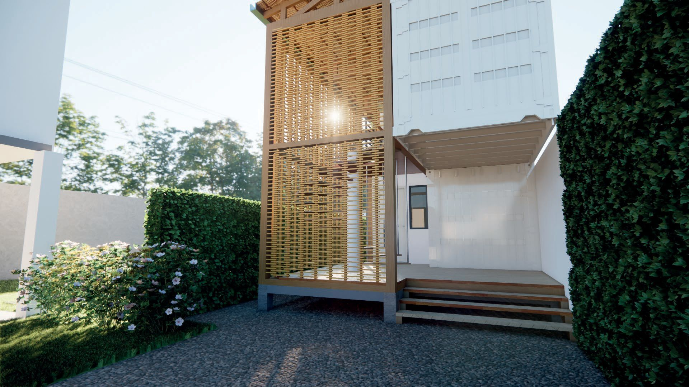
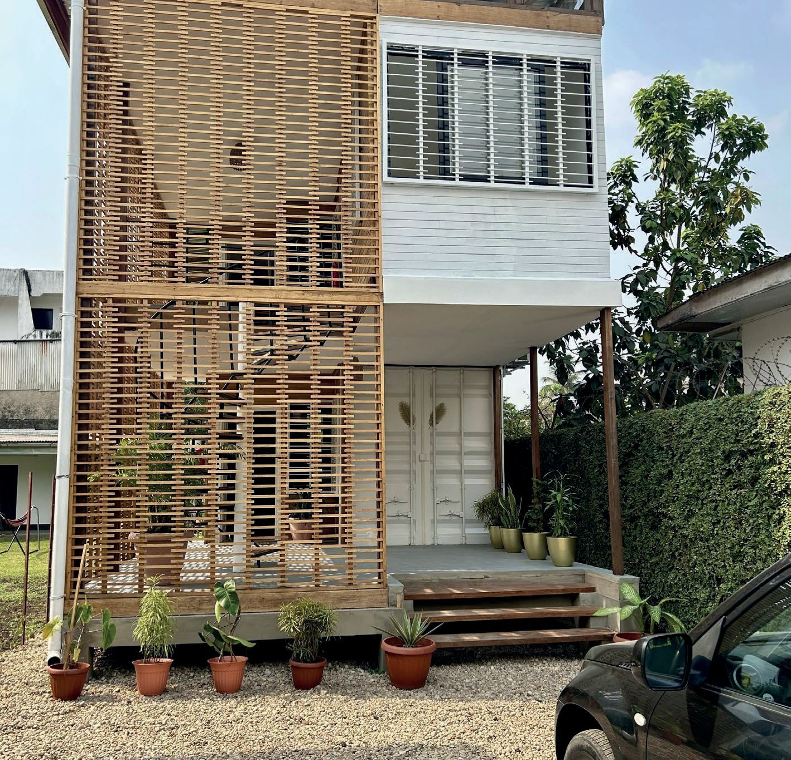
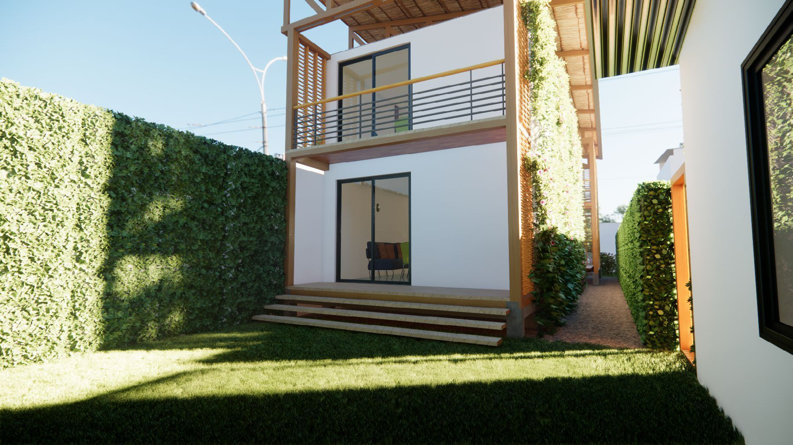
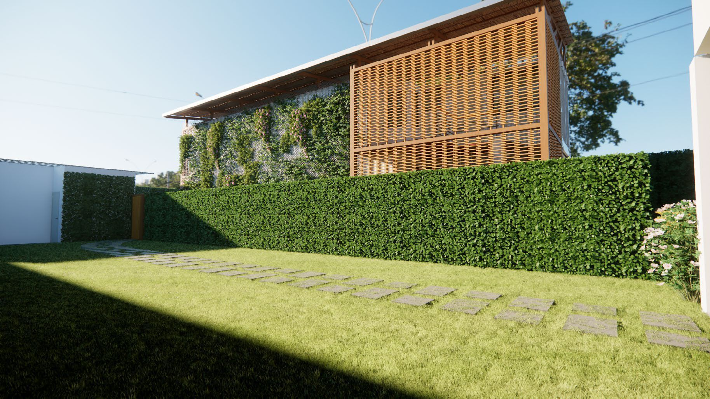
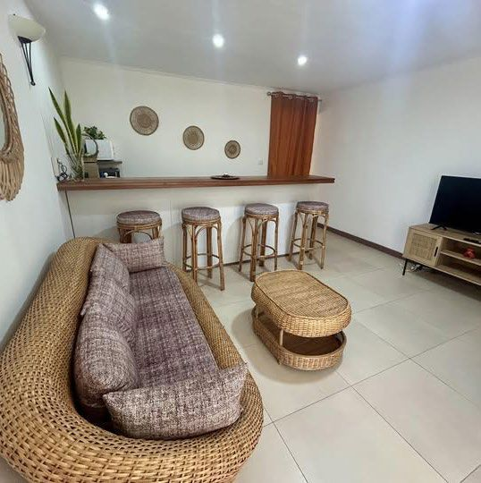
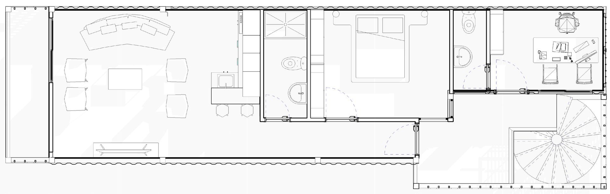

L'Upcycling Architectural
Conçu avec l’agence BARLABARLA Architectes pour le compte d’un client privé, ce projet audacieux repose sur la transformation de conteneurs maritimes recyclés. Loin de l’esthétique brute du cargo, les modules sont ici sublimés pour créer une dépendance R+1 contemporaine et durable.
L’identité du projet réside dans le dialogue entre l’industriel et l’organique. La structure métallique rigide des conteneurs est adoucie par une «double peau» en claustras de bois et une sur-toiture ventilée. Ce dispositif n’est pas seulement esthétique ; il agit comme un bouclier thermique essentiel.
Malgré les contraintes dimensionnelles du conteneur, l’agencement propose deux appartements T2 complets de 55 m² chacun. Le rez-de-chaussée privilégie l’ouverture sur le jardin privé, tandis que l’étage intègre un bureau de gestionnaire.





